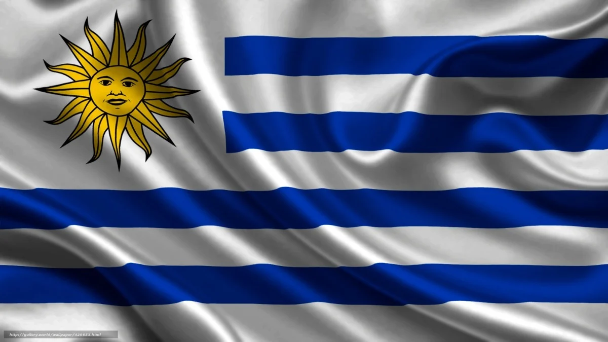

Grupo H
Portugal
Tudo sobre a Seleção Portuguesa em Copas do Mundo
A "Selecção das Quinas", como é conhecida a seleção portuguesa em seu país, participou em 2018 de sua
sétima edição da Copa do Mundo de futebol. Em duas ocasiões os portugueses chegaram às semifinais. A
melhor campanha ocorreu em 1966. A equipe de Eusébio chegou em terceiro lugar. Em 2006 o selecionado
português comandado por Luís Felipe Scolari e liderados em campo pelos craques Figo e Cristiano
Ronaldo chegou em 4º lugar. Em 2010 os portugueses chegaram às oitavas-de-final do Mundial.
Nas outras participações em Copas do Mundo (1986, 2002 e 2014) a seleção portuguesa não passou
da primeira fase. Em 2018, a Seleção Portuguesa foi eliminada nas oitavas-de-final. Sem dúvida um
dos melhores jogadores da sua geração e de todos os tempos, Cristiano Ronaldo bateu recorde após
recorde ao longo da sua carreira e, com 115 gols por Portugal, é o maior goleador na história do
selecionado luso e de qualquer seleção.
| Nome dos técnicos da Seleção Portuguesa em
Copas do Mundo |
| Ano |
Nome |
| 2010 |
Carlos Queiroz |
| 2014 |
Paulo Bento |
| 2018 |
Fernando Santos |
| 2022 |
Fernando Santos |
| Portugal na copa do mundo de 2022 |
| Data/horas |
Adversário |
Estadio |
| (24/11) ás 13hrs |
Portugal x Gana |
974 (Porto de Doha) |
| (28/11) ás 16hrs |
Portugal x Uruguai |
Lusail |
| (02/12)ás 12hrs |
Portugal x Coreia do Sul |
Education City |
Gana
Tudo sobre a Seleção Ganesa em Copas do Mundo
É uma das maiores forças do futebol africano,participou três vezes da Copa do Mundo (2006, 2010, 2014),
Desde 2006 Gana participa consecutivamente do Mundial de Futebol. A seleção de Gana chegou às
oitavas-de-final na sua primeira participação em 2006. Em 2010 foi eliminada nas quartas-de-final e
em 2014 foi eliminada na Primeira Fase. Uns dos melhores jogadores da Seleção Ganesa foi Gyan ganhou
fama mundial em 2010, na única Copa disputada em solo africano na história. Foi ele quem perdeu o
pênalti nos acréscimos do jogo entre Gana e Uruguai, que valia a vaga na semifinal da competição.
| Nome dos técnicos da Seleção Ganesa em Copas do Mundo |
| Ano |
Nome |
| 2010 |
Milovan Rajevac |
| 2014 |
Akwasi Appiah |
| 2018 |
Charles Akonnor |
| 2022 |
Goran Stevanovic |
| Gana na copa do mundo de 2022 |
| Data/horas |
Adversário |
Estadio |
| (24/11) ás 13hrs |
Gana x Portugal |
974 (Porto de Doha) |
| (28/11) ás 10hrs |
Gana x Coreia do Sul |
Education City |
| (02/12)ás 12hrs |
Gana x Uruguai |
Al Janoub (Al Wakrah) |
Uruguai

Tudo sobre a Seleção Uruguaia em Copas do Mundo
Contando-se somente as conquistas de Seleções principais, o Uruguai é a Seleção mais
laureada na história do futebol mundial, com 19 títulos oficiais reconhecidos pela FIFA, o Uruguai já
havia se classificado para 13 edições da Copa do Mundo (1930, 1950, 1954, 1962, 1966, 1970, 1974, 1986,
1990, 2002, 2010, 2014 e 2018), o que faz dela a terceira Seleção da América do Sul com mais participações
em Copas do Mundo, atrás somente do Brasil e da Argentina.
Entraram na lista de maiores artilheiros da história do Uruguai. Luis Suárez, Edinson Cavani, Diego Forlán
e Loco Abreu são casos de centroavantes uruguaios que fizeram sucesso no futebol mundial.
| Nome dos técnicos da Seleção do Uruguai em
Copas do Mundo |
| Ano |
Nome |
| 2010 |
Tabárez |
| 2014 |
Óscar Tabárez |
| 2018 |
Óscar Tabárez |
| 2022 |
Diego Alonso |
| Uruguai na copa do mundo de 2022 |
| Data/horas |
Adversário |
Estadio |
| (24/11) ás 10hrs |
Uruguai x Coreia do Sul |
Education City |
| (28/11) ás 16hrs |
Uruguai x Portugal |
Lusail |
| (02/12)ás 12hrs |
Uruguai x Gana |
Al Janoub (Al Wakrah) |
Coreia do Sul
Tudo sobre a Seleção da Coreia do Sul em Copas do Mundo
A seleção sul-coreana participou de sua 10ª edição da Copa do Mundo de futebol em 2018, sendo eliminada
na Primeira Fase. Nas primeiras cinco participações a Coreia do Sul não passou da primeira fase. Co-sede
da Copa do Mundo de 2002 com o Japão a Coreia do Sul chegou ao inédito 4º lugar. Nas Copas do Mundo de
2006 a Coreia do Sul retornou a rotina de ser eliminada na 1ª Fase. Em 2010, pela primeira vez na
história dos Mundiais as duas Coreias participaram de uma mesma edição. Na Copa do Mundo de 2010 a
Coreia do Norte saiu na primeira fase e a Coreia do Sul nas oitavas-de-final. Em 2014 a Coreia do Sul
foi eliminada na 1ª Fase. Em 2018, os sul-coreanos também não passaram da Primeira Fase, mas fizeram
história ao eliminar no terceiro jogo a Alemanha, então campeã mundial. O maior artilheiro da seleção foi
Kim Bum-bo.
| Nome dos técnicos da Seleção da Coreia do Sul
em Copas do Mundo |
| Ano |
Nome |
| 2010 |
Huh Jung-Moo |
| 2014 |
Hong Myung-Bo |
| 2018 |
Paulo Bento |
| 2022 |
Paulo Bento |
| Coreia do Sul na copa do mundo de 2022 |
| Data/horas |
Adversário |
Estadio |
| (24/11) ás 10hrs |
Coreia do Sul X Uruguai |
Education City |
| (28/11) ás 10hrs |
Coreia do Sul x Gana |
Education City |
| (02/12)ás 12hrs |
Coreia do Sul x Portugal |
Education City |